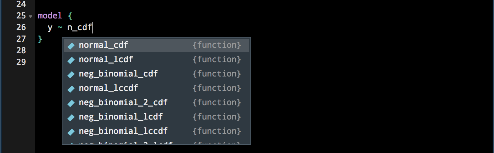
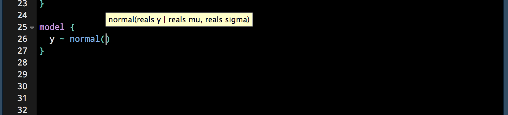
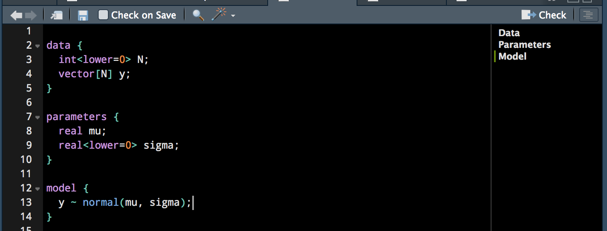
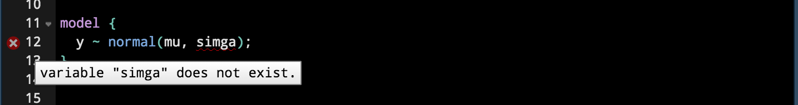

2018-10-16
We previously discussed improved support in RStudio v1.2 for SQL, D3, Python, and C/C++. Today, we’re excited to announce improved support for the Stan programming language. The Stan programming language makes it possible for researchers and analysts to write high-performance and scalable statistical models.
Stan® is a state-of-the-art platform for statistical modeling and high-performance statistical computation. Thousands of users rely on Stan for statistical modeling, data analysis, and prediction in the social, biological, and physical sciences, engineering, and business.
With RStudio v1.2, we now provide:
Improved, context-aware autocompletion for Stan files and chunks
A document outline, which allows for easy navigation between Stan code blocks
Inline diagnostics, which help to find issues while you develop your Stan model
The ability to interrupt Stan parallel workers launched within the IDE
Together, these features bring the editing experience in Stan programs in-line with what you’re familiar with in R.
RStudio provides autocompletion results for Stan functions, drawing from the set of pre-defined Stan keywords and functions. The same autocompletion features you might be familiar with in R, like fuzzy matching, are now also available in Stan programs.

As with R, RStudio will also provide a small tooltip describing the arguments accepted by a particular function.

The document outline allows for easy navigation between Stan blocks. This can be especially useful as your model definition grows in size, and you need to quickly reference the different blocks used in your program.

RStudio now uses the Stan parser to provide inline diagnostics, and will report any problems discovered as you prepare your model.

If the Stan compiler discovers any issues in your model, RStudio’s diagnostics will show you exactly where those issues live so you can fix them quickly and easily.
One aspect that had previously made working with Stan in RStudio frustrating was the inability to interrupt parallel Stan workers. This implied that attempts to fit a computationally expensive model could not be interrupted, and the only remedy previously was to restart the IDE or forcefully shut down the workers through another mechanism.
We’re very happy to share that this limitation has been lifted with RStudio v1.2. Now, when fitting a Stan model with parallel workers, you can interrupt the workers as you would any regular R code – either use the Escape key, or press the Stop button in the Console pane.
With the improvements to Stan integration coming in RStudio v1.2, getting started with Stan has never been easier. If you’d like to get more familiar with Stan, we think these resources will be helpful:
You can download the RStudio v1.2 Preview Release at https://www.rstudio.com/products/rstudio/download/preview/. If you have any questions or comments, please get in touch with us on the community forums.